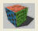
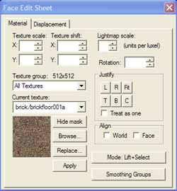
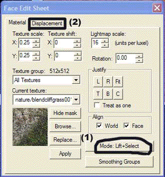
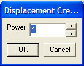
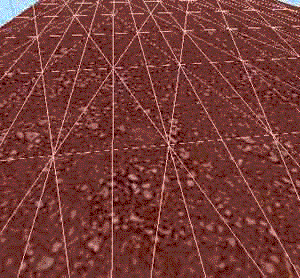
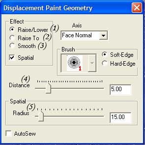
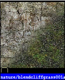
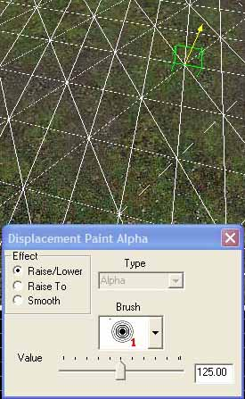
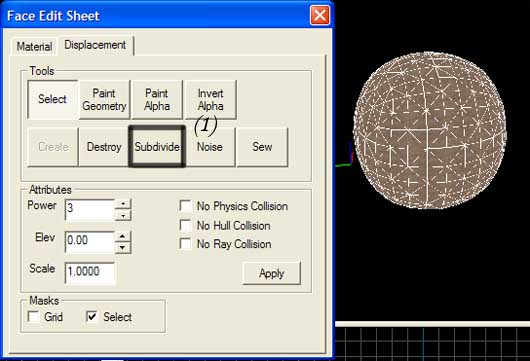

Half-Life 2 et ses mods proposent un outil surpuissant : le displacement tool. Il permet notamment de modeler un terrain, et d'utiliser les textures Blend. Je n'ai pas la prétention de dire que je vais vous apprendre à vous servir de toutes les fonctions de l'outil Displacement tool, ça serait trop long, et trop compliqué. Nous allons nous contenter d'apprendre à nous servir des deux fonctions principales de cet outil : Paint Geometry et Paint Alpha, ainsi que de la fonction Subdivide (en bonus pour les Zéros sages).
Avant de commencer à jouer avec les fonctions de l'outil Displacement, peut-être serait-il intéressant de savoir... le lancer, ce displacement tool !
Bon je passe la partie "lancez Hammer, créez une nouvelle map...". Regardez sur la barre d'outils à gauche de votre écran. Vous devriez voir ça quelque part :

Eh bien ce magnifique petit carré de toutes les couleurs, c'est l'icône du Displacement tool ! Allez, cliquez dessus... Voici ce que vous êtes censés avoir sous les yeux :

On enchaîne, les bases vous les avez ! (Oui je sais, faire une sous-partie pour ça, c'était gonflé, mais je n'arrivais pas à les faire rentrer autre part ces bases !)
Aaaaah, les choses intéressantes commencent ici ! On va apprendre à se servir de l'outil Paint Geometry ! Nous on va juste créer une petite colline, pour que le tuto soit simple, mais rien ne vous empêchera de faire des falaises et des montagnes si ça vous chante !
On y va ! Créez un bloc, peu importe sa taille et sa texture, on va juste s'en servir pour faire quelques expériences dessus. Lancez le Displacement tool, ici assurez-vous d'être en mode "Lift and Select (1)" , si c'est bien le cas, cliquez sur la surface supérieure de votre bloc, puis dirigez vous vers l'onglet "Displacement (2)".

Une fois dans cet onglet "Displacement" cliquez sur "Create". Une fenêtre apparaît. Remplacez-y le 3 par 4, puis validez.

Regardez la surface de votre bloc ! Elle devrait ressembler à ça :

Bon vous devez commencer à comprendre comment ça va marcher : on a divisé le bloc et plusieurs morceaux, liés les uns aux autres, mais qui ne sont pas totalement fixes. L'outil Paint Geometry permet de déplacer ces morceaux de bloc, pour faire des collines, des falaises... Enfin la pratique vaudra plus que mes exemples foireux ! ^^
Normalement vous avez toujours votre Displacement tool ouvert à l'onglet Displacement. Cliquez donc sur "Paint geometry". (On y est ! ^^ Enfin !) Une nouvelle fenêtre inconnue apparaît. Détaillons-la :

(1) Raise/Lower : élever/abaisser le terrain => clic gauche : élever, clic droit : abaisser. (2) Raise to : mettre à plat, tout à la même hauteur. (3) Smooth : adoucir le relief.
(4) Distance : nombre d'unité de displacement. (5) Radius : surface d'application des modifications.
Bon donc pour notre colline, nous allons prendre Raise/Lower, avec un Radius de 100.00 et une Distance à 5.00 (défaut). Maintenant que tout est réglé, cliquez avec le clic gauche sur le bloc et regardez ce qui ce passe : une petite bosse apparaît ! C'est pas encore du grand art, et encore moins une colline MAIS ce n'est plus tout plat ! Cliquez avec le clic gauche en restant appuyé, et déplacez le curseur de votre souris. Magie ! Une grosse colline ! Si vous y êtes allé trop fort, cliquez avec le clic droit pour redescendre un peu le bloc ! ^^ Voilà, peaufinez tout ça, c'est dur à expliquer alors le mieux est de vous laisser découvrir. La connaissance vient avec la pratique.
La fonction Paint Alpha permet l'utilisation des textures Blend pour mélanger deux textures sur un même bloc.
Blend quoi ? Qu'est-ce que c'est encore que ce truc !
Une texture blend, c'est une texture... qui en contient deux. Je sais ça ne vous aide pas du tout, mais je ne peux pas être plus précis ! Si, peut-être qu'une petite image vous aiderait :

Vous voyez ? Deux textures en une ! C'est tout simplement génial : ça permet donc de mélanger deux textures sans faire deux blocs différents et donc sans séparation brutale et moche ! Les textures blend peuvent être trouvées en tapant "blend" dans le champ "Filter" du texture browser de Hammer. Bon je pense qu'apprendre à s'en servir et voir par soi-même est le mieux à faire maintenant !
C'est parti, créez un bloc avec une texture blend, peu importe laquelle, moi je vais prendre nature/blendcliffgrass001a... Créez donc un bloc avec cette texture. Lancez encore une fois l'outil Displacement, assurez vous d'être en mode "Lift and Select" puis cliquez sur la surface de votre bloc sur laquelle vous voulez mélanger les textures. Allez ensuite dans l'onglet "Displacement". Cliquez maintenant sur "Paint Alpha". Pour le moment ne changez rien dans la fenêtre qui s'ouvre. Placez juste votre curseur sur votre bloc et cliquez... Magie ! la 2e texture tant attendue apparaît sur votre bloc ! Cliquez un peu partout, en restant appuyé pour aller plus vite, faites comme ça vous dit, amusez-vous ! ^^ Regardez l'image si vous ne suivez plus :

Les options de cette fenêtre n'ont pas vraiment à être modifiées, à part "value" qui peut être augmentée/diminuée.
Bon, bah voilà, vous maîtrisez la fonction Paint Alpha !
Voici la dernière partie ! Elle est un peu spéciale, je ne vais pas vous apprendre réellement à comprendre l'outil Subdivide, mais juste à l'utiliser pour faire des sphères dans HL² et ses mods ! Oui oui, de vraies sphères ! C'est possible !
Allez, commencez par créer un cube parfait dans la texture de votre choix. Sélectionnez-le en entier avec l'outil de sélection (précédemment nous ne sélectionnions qu'une face avec lift and select...). Une fois le cube sélectionné, ouvrez l'outil Displacement tool. Allez dans l'onglet Displacement, et cliquez sur create, mettez power 3 (défaut), validez, puis cliquez sur "Subdivide" (1). Magie, votre cube devient sphère !

Voilà ! Vous maniez le displacement tool ! Rien de sorcier hein ! Mais c'est si pratique ! Croyez-moi, maintenant vous ne pourrez plus vous en passer ! Allez, une dernière petite image pour le plaisir :